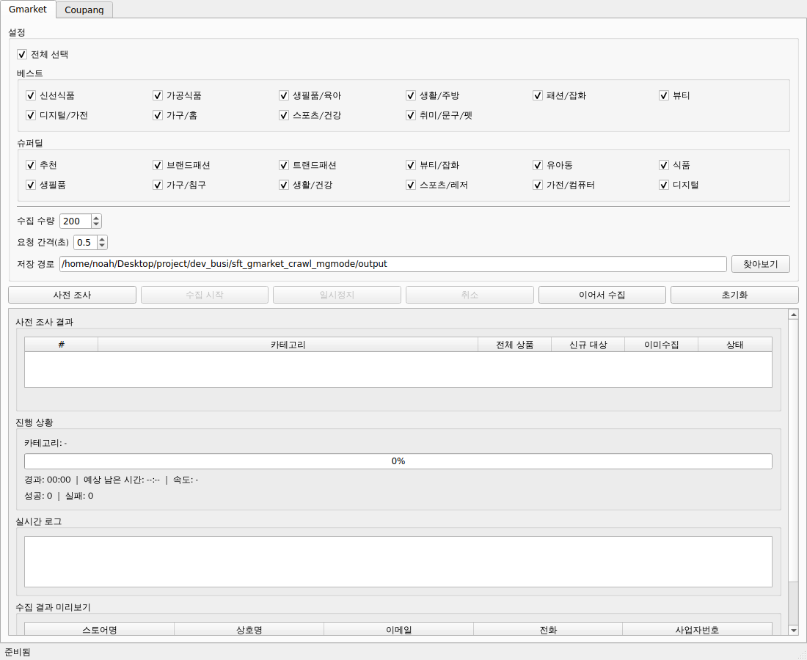
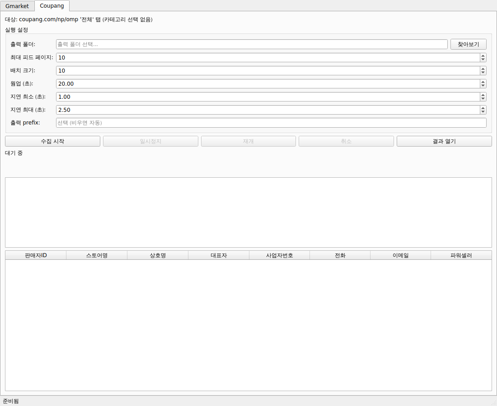

SellerCollector v3.0 · Windows 단일 EXE
처음 사용하는 분을 위한 쉽고 간단한 안내서
작성일: 2026-07-29 · 대상 파일: SellerCollector.exe
1 / 5
파일 탐색기에서 SellerCollector.exe가 있는 폴더를 엽니다.
주소창에 cmd를 입력하고 Enter를 누릅니다.
인터넷에서 Gmarket·Coupang용 브라우저와 GeoIP 데이터를 설치합니다. 약 1.4GB를 내려받을 수 있으며, 완료될 때까지 창을 닫지 마세요.
마지막에 성공 메시지가 나오고 종료 코드가 0이면 준비가 끝난 것입니다.
SellerCollector.exe를 더블클릭합니다. 화면 위쪽에서
Gmarket 또는 Coupang 탭을 선택합니다.
2 / 5

| 순서 | 할 일 |
|---|---|
| 1 | 카테고리: 처음에는 전체 선택을 끄고 원하는 항목 1개만 선택합니다. |
| 2 | 수집 수량: 첫 테스트는 10을 권장합니다. 요청 간격은 기본값 0.5초를 유지합니다. |
| 3 | 저장 경로: 로컬 폴더를 선택합니다. 공유 폴더나 네트워크 드라이브는 사용하지 마세요. |
| 4 | 사전 조사: 전체·신규·이미 수집 건수를 확인합니다. |
| 5 | 신규 대상이 있으면 수집 시작을 누릅니다. |
| 6 | 완료 후 저장 폴더에서 JSON·CSV 결과를 확인합니다. |
사전 조사 뒤 카테고리나 저장 경로를 바꾸면 사전 조사를 다시 실행해야 합니다.
3 / 5

| 순서 | 할 일 |
|---|---|
| 1 | 출력 폴더에서 결과를 저장할 로컬 폴더를 반드시 선택합니다. |
| 2 | 첫 테스트는 최대 피드 페이지 1로 설정합니다. |
| 3 | 배치 10, 웜업 20초, 지연 최소 1.0초·최대 2.5초는 기본값을 유지합니다. |
| 4 | 출력 prefix는 선택 사항입니다. 비우면 파일 이름이 자동 생성됩니다. |
| 5 | 수집 시작을 누르고 단계·진행·통계와 로그를 확인합니다. |
| 6 | 완료 후 결과 열기를 눌러 JSON·CSV 파일을 확인합니다. |
4 / 5
| 버튼 | 기능 |
|---|---|
| 일시정지 | 현재 처리 뒤 잠시 멈춥니다. 재개로 계속합니다. |
| 취소 | 현재 요청을 정리한 뒤 중단하며, 수집된 내용은 부분 결과로 저장됩니다. |
| 이어서 수집 | Gmarket의 남은 신규 대상만 다시 조사해 이어서 수집합니다. |
| 초기화 | Gmarket 수집 이력과 진행 상태를 지웁니다. 전체를 다시 수집할 때만 사용하세요. |
--setup-runtime을 다시 실행한 뒤 --verify-runtime으로 확인합니다.--setup-runtime을 다시 실행합니다.5 / 5